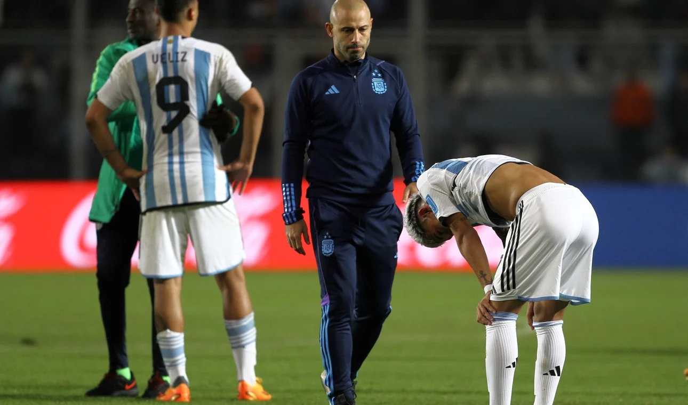

Argentina eliminada del mundial sub 20

Fin de la ilusión. La Selección Argentina Sub 20 se despidió este miércoles del Mundial de la categoría luego de caer por 2-0 frente a Nigeria en San Juan, en un partido en el que terminó pagando caros dos errores que le costaron los goles del elenco africano.
El equipo de Javier Mascherano complicó a los africanos y tuvo sus chances, pero le faltó claridad para definir en los momentos que tuvo en el encuentro.
Por el contrario, Nigeria aprovechó el envión y logró ponerse en ventaja cuando tuvo le dominio del jueg.
Fue un mazazo para la Albiceleste la conquista, porque había tenido buenos pasajes en el partido e incluso había obligado a los africanos a defender muy cerca de su arco.
Con este resultado, la Albiceleste se despidió de la Copa del Mundo en su casa, yéndose con mucha amargura por el trámite del partido y el resultado, pero con la frente en alto porque no dejó de buscarlo, mientras que Nigeria enfrentará al ganador de Ecuador y Corea del Sur en cuartos de final.